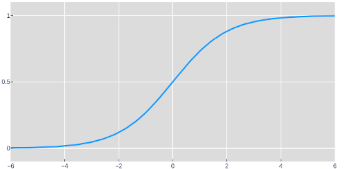

Visualizing Neural Network Predictions
In this post we'll explore what happens within a neural network when it makes a prediction. A neural network is a function that takes some input and produces an output according to some desired prediction. It's possible to make state-of-the-art predictions without understanding the concepts highlighted in this post. That's part of the beauty of modern computing and aggregate knowledge in general. But some things are too fundamental to just accept as fact and when I really stopped to look at these functions, machine learning became a little bit less of black box.
The models (not all are neural networks) in this post are composed of 3 types of operations.
- Matrix Multiplication
- Bias (Addition)
- Non-Linear Functions
We'll build 3 models, add 1 operation at a time, and visualize why it is necessary to make a prediction. If you're comfortable in Python, you can follow along in code. Let's start by defining the structure of the inputs and outputs.
Datasets
We'll look at 3 datasets in this post. The Iris Flower Dataset and 2 synthetic datasets. We won't actually make predictions on the Iris dataset, but it will help us understand the structure of the other 2 datasets, which are a bit more abstract. The Iris dataset consists of information about 3 species of flowers: 4 measurements, petal width, petal length, sepal width, and sepal length (in centimeters) and a species label for each flower. A common task is to predict the species from the measurements. The model takes 4 input measurements, or features, as a point $(pw, pl, sw, sl)$ and predicts a score for each species $(s0, s1, s2)$. A high score $s2$ and lower scores $s0$ and $s1$ means the model predicts that the input measurements came from a flower of species 2, Virginica.
Instead of predicting scores for 3 species, we might only want to predict if measurements came from species 2 or not. In this case we could make the model output scores (s2, not s2). Or even simpler, we could use a single score s2 and interpret high scores to mean the model predicts the measurements came from species 2 and low scores to mean they did not. We can choose a threshold, or decision boundary, to determine what is low and what is high. 0.5 is a common decision boundary.
We can think of the 4 input measurements as points in 4 dimensional space and the predictions for all 3 species as points in 3D space, but as people living in 3D and looking at this post on 2D screens, that is easier said than done. The datasets we'll predict in this post have just 2 input features and a single output dimension, 2D points and 1D points, respectively.
The first synthetic dataset is the Diagonal dataset. A 2D point in the X-Y plane, e.g. $(0.6, 0.2)$ is a single input to the model and its color is the thing the model is trying to predict.
When the model takes in a point $(x, y)$, it should output a prediction as a single
number, $p$. This is analogous to predicting a single species in the Iris
dataset, low for not blue and high for blue.
Let's try to get a
visual understanding of how our 3 operations can turn input points into
predictions.
Matrix multiplication
There are a lot of ways to think about matrix multiplication, but for now let's think about it as applying some change $\textbf{W}$ to a set of points $\textbf{D}$. We'll call this a projection $\textbf{P}$.
It's important to note that the size of $\textbf{P}$ is determined by the first axis
of $\textbf{D}$ and the second axis of $\textbf{W}$ i.e. the same number of points
come out as went in, but the dimensionality of the points is determined by the
weight matrix $\textbf{W}$'s 2nd axis. The middle axes, $2$ in this example,
must be the same size for a matrix multiplication to make sense.
Let's look at
an example where we project the input points into 2 dimensions and 1 dimension. The
weights of matrix $\textbf{W}$: $\textbf{q}$, $\textbf{r}$, $\textbf{s}$, and
$\textbf{t}$ determine where in space these points get projected.
The animation below shows the points projected into new spaces as we cycle through different weight values for both the 2D and 1D projection. It's useful to think about the space and the points within it being stretched and rotated by a projection. This is easiest to see in the first plot in 2D. The values $\textbf{q}$ and $\textbf{s}$ are in both weight matrices and the 1D projection is just the x' values from the result of the 2D projection. At this point you may want to look at the steps involved in matrix multiplication to understand how each point is calculated.
You may have noticed a point in the animation where all of the black points were farther left in 2D and lower in 1D than all of the blue points. If not, watch it again and maybe even try to stop it where that is the case. Let's take the 1D outputs and call them predictions. That's our first model: values for weights in $\textbf{W}$, $\textbf{q}$ and $\textbf{s}$, and a matrix multiplication operationare the model. That's it.
How well can the model do? The dashed line is the decision boundary, and even when all the black points are low and the blues are high, the decision boundary doesn't split them well. So these aren't good predictions. You may have noticed in the animation that the points near the origin (0, 0) always stayed near the origin. That would pose a problem for a point like (0.0, 0.01) that is blue (it's above the y=x diagonal), and should be mapped to above 0.5 in the prediction. The model could really stretch the output space to make the right prediction, but let's go ahead and introduce another operation to make this dataset a bit simpler to solve.
Bias (addition)
What if the model could shift the points on the 1D prediction axis in addition to rotating and stretching with matrix multiplication? Let's introduce a new term b, a bias, to the model to do just that.
Since the output of $\textbf{DW}$ is a one dimensional point, a scalar, $b$ should be too. Instead of looking at a bunch of random values (as in animation 1), the animation below gives us a glimpse inside the model as it learns values for $\textbf{W}$ and $b$ in order to predict the colors of the points in the dataset.
"Learning" or "training" and is a-whole-nother can of worms that I won't talk about in this post. What's important to know for now is that we're looking for model weights and a bias that put the points on the appropriate side of the decision boundary. Check out A Neural Network in 11 lines of Python for an in depth intro to training neural networks (and the inspiration for this post).
Middle: 2D projection of the predictions in which the y values are kept the same as the input.
Bottom: Learned 1D predictions and a histogram to show point density.
Great, so model 2 can solve the diagonal dataset. Let's move on to something a bit harder.
You may be wondering how matrix multiplication and a bias can be used to project and shift the XOR dataset such that the appropriate points lie on the appropriate side of the 0.5 decision boundary. The simple answer is that given only those two operations, it's not possible. The result of series of matrix multiplications and bias shifts, linear transformations , can always be simplified down to a single linear transformation. In the example below we project a to b then b to c and so on to e, but there will always be a projection that will allow us to project a directly to e and a single linear transformation can only rotate, stretch, and shift. This will always be the case for any sequence of linear transformations, even when projecting up into 3 or more dimensions and then back down.
Non-Linearity
So the model needs a non-linear function that can fold the space the points are in so that a single rotation and shift can put all of the points of the appropriate color on the appropriate side of the 0.5 decision boundary.
Here we have the sigmoid function: a non-linear function. The next model starts by up projecting the dataset into 3 dimensions. When the points are in 3 dimensions, they can be folded in some interesting ways with the sigmoid function. We'll denote the result of these operations as H, since usually intermediate layers in a neural network are referred to as hidden. (Don't worry though, we'll take a peek at what this layer looks like). Now that we've given the model the ability to fold, it can project those points down to a set of 1D predictions that wasn't possible before.
What would happen if we didn't project into 3 dimensions? Take a second to ponder this. You can also try it yourself in the colab notebook for this post.
The last equation above is shorthand for the first two and means that the model is a function that takes $\textbf{D}$, some input data, and theta, the learned values for all of the various weights and biases, and outputs a prediction $\textbf{P}$. Let's watch as model 3 learns the parameters θ and tries to predict the points in the XOR dataset.
Middle: 3D projection, the hidden layer of the model. Colored by prediction (values closer to 0.5 are more grey)
Bottom: 1D predictions and a histogram to show point density.
Pretty neat, huh? I thought so when I first saw it and wanted to share. This model can nearly fit the XOR dataset, and if we added another dimension to the hidden layer (making it 4 dimensions), that would give it enough space to fold and predict each point perfectly, but from there it starts to get hard to visualize.
If you haven't already, it's worth running through the code for these models. Don't just take my word for things like the necessity of the sigmoid layer. Try removing it from the model and look at the predictions and the shape of the points in the hidden layer.
In summary
We looked at how data can be thought of and manipulated as points. Inputs, outputs, and even the intermediate outputs within models can all be thought of as points.
We created 3 models using 3 of the most common types of operations in neural networks: Matrix multiplications, biases, and nonlinearities.
- A single matrix multiplication
- A matrix multiplication and a bias
- A model composed of 2 layers:
- A matrix multiplication and a bias with a non-linearity
- A matrix multiplication and a bias
Wait, so why is it called a neural network? Model 3's configuration, and the non-linearity in specific, are what make Model 3 a neural network. The name comes from a similarity in how small groups of neurons in the brain produce outputs for a given input. Conceptualizing models as layers of neurons "firing" or "activating" in response to inputs is just a different perspective from the one I've shown in this post.
Going Forward
There is more than 1 lifetime's worth of interesting things to explore in machine
learning as of today and the field is constantly expanding, so I've tried to keep this
post short and to the point. I've ignored many important basic topics
like Accuracy
and Loss for
quantifying a model's
performance, train-test
splits that help us understand how well a
model generalizes, overfitting, regularization
to help a model prevent overfitting and generalize better, and optimization techniques
like SGD .
My next post will explore models as points in space 🤯 and takes inspiration from Visualizing the loss landscape. I also plan to make a visualizing NN predictions part 2 in which I explore other common model operations and architectures like Convolution, RNNs, and Transformers on simple datasets.
Feel free to reach out with any questions or comments on the tweet below and follow me @tuckerkirven to see announcements about other posts like this.
Graphing things has helped my understanding since TI-83s and y=mx+b.
— Tucker Kirven 🧢 (@tuckerkirven) December 16, 2019
I've written a post about some of my first "aha" moments learning ML. This is geared towards people new to ML, but more seasoned practitioners might find these visualizations neat too.https://t.co/BejVWD2CuX